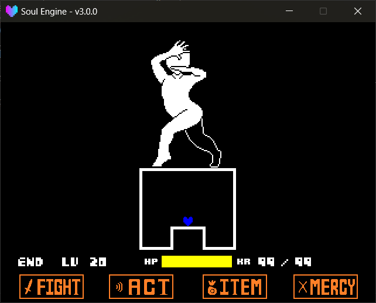

玩家与灵魂
这一页讲两件事：玩家本身（血量、受伤、KR），以及灵魂（决定玩家怎么动）。
路径： Scripts/Libraries/Battle/Player/ 。
在战斗场景中以 Player 作为全局变量出场。
玩家¶
Player 保存了玩家的战斗数据，同时持有那颗灵魂的贴图。
玩家属性
name玩家名字。lv等级。maxhp/hp最大血量 / 当前血量。kr当前KR（ karma ，即那种会持续掉血的紫色伤害）数值。canMove玩家此刻能不能操作灵魂。sprite灵魂的贴图对象。action灵魂模块本身（见下一节）。soul当前灵魂的名字，例如"red"、"blue"。souls通过NewSoul额外生成的灵魂列表。platforms单向平台列表（Player.BluePlatform建的）。任何灵魂都能用，见本页末尾的「单向平台」。platform_ground玩家此刻是否站在某个单向平台上。hurt_time受伤无敌帧剩余时间。
玩家方法
Player.SetSoul(id, args, use_sound)切换灵魂。id灵魂名字，或数字快捷方式：1="red"、2="orange"、6="blue"。args传给灵魂Init的额外参数。use_sound为true时播放snd_ding.wav。
Player.NewSoul(id, args, use_sound)额外生成一颗独立的灵魂（自己的贴图、自己的状态），常用于双子灵魂之类的效果。args同样传给Init。
Player.SetHitBox(width, height, soul)设置灵魂的碰撞盒，默认是{4, 4}。soul省略时改主灵魂，传入灵魂表时改那一颗。- 传
0或负数会被悄悄改成1，想"关掉判定"得自己跳过判定循环。
Player.SetPerfectPixel(enabled)把主灵魂和Player.souls里每一颗附加灵魂都切成完美像素碰撞（按贴图真实像素判定，而不是_hitbox方框），返回(是否可用, 矩形数量)。- 对
16×16的心形来说，开了之后判定范围比默认的4×4更大，属于手感取舍，和SetHitBox二选一。
- 对
Player.Heal(amount, use_sound)回血，不会超过maxhp。Player.Hurt(amount, time, use_sound)扣血。amount扣多少（传负数即为回血）。time无敌帧长度，默认60，这段时间灵魂会闪烁且不再判定碰撞。
Player.AddKR(kramount)增加KR。只有开了KR才生效，且不会直接把血扣到0以下。Player.AddParticle()在当前位置生成一个灵魂残影。Player.Update(dt)引擎每帧调用，一般不需要手动调。
血量归零会直接切场景
Player.Update 里写死了： hp + kr <= 0 时立刻 Scenes.switchTo("scene_gameover") 。
想做"锁血不死"的剧情战，请自己管理 hp ，或者在 OnHit 回调里卡住伤害。

灵魂¶
灵魂就是一个 Lua 模块，里面至少要有一个 Update(dt) 。
灵魂路径： Game/Souls/ （Game 区，优先）、 Scripts/Libraries/Battle/Player/Souls/ （引擎默认，兜底）。
Player.action 就是灵魂模块本身
SetSoul 不会把灵魂模块复制一份，而是直接把模块表挂到 Player.action 上。
这意味着灵魂里写的所有 self.xxx 都留在模块表里。引擎在每次加载灵魂时都会重新执行一遍文件，就是为了避免上一场战斗的状态被带进下一场——所以不要在灵魂里缓存"只应该初始化一次"的东西，每次 Update 都当成新的一局来写。
灵魂模板¶
local action = {
sprite = nil,
can_move = true,
is_moving = false,
-- use_platforms = true, -- 可选：被 Player.BluePlatform 的单向平台接住
}
-- Default vars.
local speed = 2
-- 每次换到这颗灵魂时调用一次：绑定贴图、上色、把状态复位。
function action.Init(sprite, can_move, args)
action.sprite = sprite
if (can_move ~= nil) then
action.can_move = (can_move ~= false)
end
if (sprite) then
sprite.color = {1, 0, 0} -- 不要上色就删掉这行
end
speed = 2 -- 自己的计数器 / 开关也在这里复位
return action
end
function action.Update(dt)
if (not action.sprite) then return end
-- TODO: 你的移动逻辑
end
return action
灵魂可用字段
sprite引擎在Init里交给灵魂的玩家贴图。can_move切换灵魂那一刻由引擎从Player.canMove拷进来一份，为false时不应移动。注意它不会被逐帧回写——运行中改Player.canMove是引擎自己在Player.Update里卡住移动的，你不必去同步这个字段。is_moving自己维护，用来判断是否要播移动动画。use_platforms可选字段，默认不写。写成true才会被Player.BluePlatform的单向平台接住；不写就是直接穿过去。详见本页末尾的「单向平台」。
初始化写在灵魂里（引擎不再代劳）
SetSoul 只做三件事：解析名字、调用 Init(sprite, can_move, args) 、把名字记进 Player.soul 。
贴图上什么颜色、开局速度是多少、方向朝哪边，全部由灵魂自己在 Init 里决定——要改这些只改灵魂文件就好，不用碰引擎。
没有 Init 的旧灵魂照常能跑：引擎会自己把 sprite / can_move 塞进去，并在控制台提醒一句。
写自己的灵魂时，读输入统一用 Controller.GetState("left") 这一套，不要用 Keyboard —— 手柄才吃得下。
引擎自带的四种灵魂¶
这四颗灵魂都在自己的 Init 里给自己的贴图上色（红 {1, 0, 0} 、橙 {1, 0.5, 0} 、蓝 {0, 0, 1} 、黄 {1, 1, 0} ），想换颜色改灵魂文件就行。
红色 red¶
最普通的八向自由移动。按住 cancel 时速度减半（原版的"慢走"）。
Player.SetSoul(1) -- 或 "red"
橙色 orange¶
同样是八向移动，但只能沿八个方向走（斜向也只能是 45°），并且移动时会在身后留下一串残影。
Player.SetSoul(2) -- 或 "orange"
蓝色 blue¶
带重力的灵魂，会往下掉、能跳。引擎自带的灵魂里只有它写了 use_platforms = true ，所以只有它默认能踩单向平台——别的灵魂在字段里加上这一行也能踩。
Player.SetSoul(6) -- 或 "blue"
蓝色灵魂方法
这些方法挂在灵魂模块上，而 Player.action 就是灵魂模块本身，所以调用时一律点号、不传 self ：
Player.action.SlamAuto(0, 1, 10)
写成 Player.action:SlamAuto(...) 会当场报错。
Angle(angle)只旋转贴图，不改变重力方向。AngleDir(direction, angle)同时设置重力方向与贴图角度。AngleAuto(angle)设置贴图角度，重力方向由角度自动推导（0= 下、90= 左、180= 上、270= 右）。Slam(angle, hp, inv)朝当前重力方向猛砸。落地时按hp/inv调用Player.Hurt。SlamDir(direction, angle, hp, inv)指定重力方向再砸。SlamAuto(angle, hp, inv)由角度推导重力方向再砸。GetDirection()返回当前重力方向。SetDirection(direction)只改重力方向，不动贴图角度。GetSpeed()返回当前竖直速度（正数 = 下落）。SetSpeed(value)直接改竖直速度。SetCanJump(value)锁住 / 解锁跳跃。SetJumping(value)强制进入 / 退出"正在跳跃"状态。Land()着陆：速度归零并恢复跳跃能力。Reset()把所有状态恢复默认。Init(sprite, can_move, args)换到这颗灵魂时由引擎调用：上蓝色、贴图转回0、然后Reset()。Update(dt)引擎每帧调用。
Slam 那三个函数的 hp / inv 是"砸地自伤"用的：想做"砸下去要付出代价"的机制就填，不想就填 0 或省略。
黄色 yellow¶
同样是八向移动，但按 confirm 会打出心形子弹。子弹带一点重力、边飞边变大，出屏或撞到别的子弹就消失；想接住自己的子弹，给目标子弹加个 HitCall 函数即可。
Player.SetSoul("yellow") -- 没有数字快捷方式，只能写名字
- 射击冷却 5 帧，声音是
snd_shoot.wav。 - 子弹图片是
Soul Library Sprites/spr_heartbullet_1.png。 - 按住
cancel一样会把移动速度减半。
蓄力演出接上了，大子弹本身还没有
按住 confirm 会开始蓄力（总时长 60 帧），分两段演出：
- 蓄到 1/3 时，四颗小圆点从四周螺旋收拢到灵魂上；
- 蓄满时，灵魂上再叠一层半透明、会脉动的黄色影子（就是"充能完成"的标记，它每帧跟着灵魂走）。
任何一次松手都会把蓄力清零，上面两层特效自己淡出——所以半路松手不会留下任何残留。
但松手不会真的打出一颗大子弹：那颗弹幕还没写。也就是说这段现在只是"能看见"的演出。
想主动清掉屏幕上残留的蓄力特效（例如波次切换时），调：
Player.action.ClearBigshot()
它只清特效、不动蓄力计数。换灵魂时 Init 里已经自动清过一次了。
单向平台¶
一套只从上方接住玩家的平台：玩家可以从下面跳穿它，也不会在站在下面时被莫名吸上去。
平台本身和灵魂无关，Player.BluePlatform 这个函数名是历史遗留（当初只为蓝色灵魂写的）。
平台方法
Player.BluePlatform(x, y, width, args)创建一块平台，返回平台对象。x/y中心坐标，默认320, 320。width宽度（像素），默认50。args可选设置表：mode"none"（静止）或"move"（自动移动），默认"none"。speed{x = n, y = n}，mode为"move"时的每帧位移。rotation平台角度，默认0。color平台颜色，默认{1, 0.3, 1}。layer所在图层，默认"BelowBullets"。active是否参与碰撞，默认true。surface_offset判定面相对顶边的额外偏移，默认0。surface_tolerance判定带的半厚度，默认2。line_color/line_alpha顶部高光线的颜色与透明度。
Player.ClearPlatforms()销毁所有平台。
平台对象方法
MoveTo(x, y)移动平台（高光线会自动跟上）。SetRotation(angle)设置角度。SetWidth(w)设置宽度。Sync()手动同步高光线，一般不用调。Destroy()/Delete()销毁这块平台。
一块会左右移动的平台
local p = Player.BluePlatform(320, 350, 60, {
mode = "move",
speed = {x = 2, y = 0},
color = {1, 1, 0.3}
})
-- 也可以在波次的 Update 里自己推
function wave.Update(dt)
p.image.x = 320 + 40 * math.sin(math.rad(Battle.TIME_F))
end
想被接住，灵魂要自己写一行 use_platforms
平台是自愿加入的：灵魂表里写了 use_platforms = true 才会被接住，不写就直接穿过去。
local action = {
sprite = nil,
can_move = true,
use_platforms = true, -- <- 加这一行，Player.BluePlatform 就会接住它
}
- 引擎自带的灵魂里，目前只有蓝色写了这个字段——所以默认表现和以前一样：换成红/橙/黄就穿过平台往下掉。
- 字段只在缺失时才回退到老的判断（
Player.soul == "blue"），所以你自己那份没加字段的Game/Souls/blue.lua照旧能踩平台，不用改。 - 判定本身（
Player.BluePlatformCollide(sprite, 垂直速度)）只看贴图和竖直速度，与灵魂无关。
Player.NewSoul生成的附加灵魂不会被引擎自动判定，想在它自己的Update里踩平台，就自己调一次：
Player.BluePlatformCollide(soul.sprite, soul.GetSpeed())
受伤判定¶
碰撞不是灵魂自己算的，而是 Player.Update 统一做的：
- 处于无敌帧（
hurt_time > 0）时，直接跳过所有碰撞。 - 否则遍历所有带
isBullet的贴图，先用Sprites.GetHitbox取灵魂的判定盒（内含_hitbox覆盖），做一次矩形粗判。 - 粗判命中后，再用
Sprites.PPCollide(bullet, Player.sprite)做一次精细判定：- 返回
true/false就以此为准（说明弹幕或灵魂任意一方开了完美像素）； - 返回
nil表示两边都没开，沿用第 2 步的矩形结论。
- 返回
- 最终判定为命中就调用
Battle.OnHit(bullet)—— 这一条是你在场景里自己写的，详见 战斗场景与回调 。
想按真实像素判定就这样开
Player.SetPerfectPixel(true) -- 主灵魂 + 所有附加灵魂一起切
bullet:SetPPCollision(true) -- 或者只让某几颗弹幕走像素判定
sprite:SetPPCollision(enabled) / sprite:IsPPCollision() ，细节见 贴图 → 完美像素碰撞 。
弹幕颜色
弹幕对象上的 HurtMode 字段决定了它算不算伤害，常见的取值：
"normal"碰到就受伤。"blue"/"cyan"移动中才会受伤，站着不动安全。"orange"站着不动才会受伤，移动中安全。"safe"完全无害。
这个字段由你自己决定怎么写进场景的 OnHit 里，引擎只负责把它挂在贴图上传递过来。